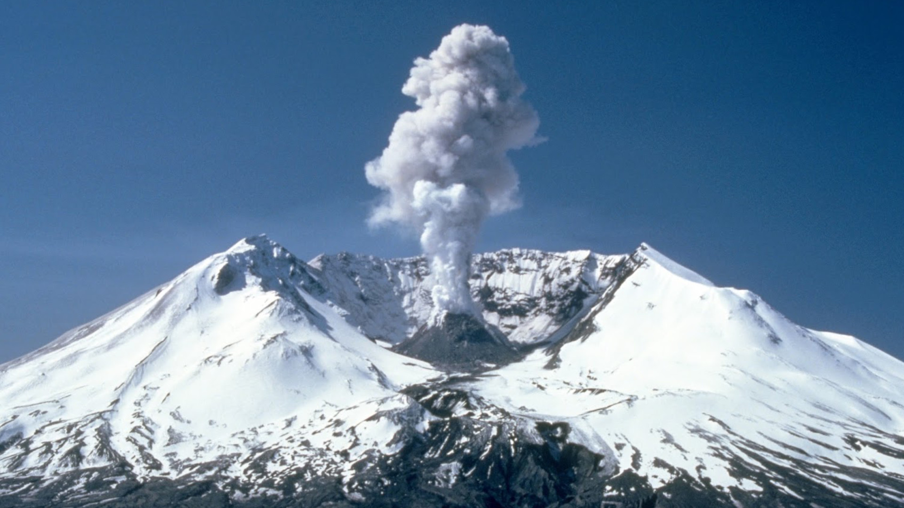

Erupciones fisurales y llanuras de lava
A pesar de que las erupciones volcánicas están relacionadas con estructuras en forma de cono, la mayor parte del material volcánico es extruido por fracturas en la corteza denominadas fisuras. Estas fisuras permiten la salida de lavas de baja viscosidad que recubren grandes áreas. La Meseta del Columbia en el noroeste de los Estados Unidos se formó de esta manera. Las erupciones fisurales expulsaron lava basáltica muy líquida. Las coladas siguientes cubrieron el relieve y formaron una llanura de lava (plateau) que en algunos lugares tiene casi 1,5 km de grosor. La fluidez se evidencia en la superficie recorrida por la lava: unos 150 km desde su origen. A estas coladas se las denomina basaltos de Inundación (flood basalts).
Este tipo de coladas sucede principalmente en el suelo oceánico y no puede verse. A lo largo de las dorsales oceánicas, donde la expansión del suelo oceánico es activa, las erupciones fisurales generan nuevo suelo oceánico. Islandia está ubicada encima de la dorsal centroatlántica y ha experimentado numerosas erupciones fisurales. Las erupciones fisurales más grandes de Islandia ocurrieron en 1783 y se denominaron erupciones de Laki. Laki es una fisura o volcán fisural de 25 km de largo que generó más de 20 chimeneas separadas que expulsaron corrientes de lava basáltica muy fluida. El volumen total de lava expulsada por las erupciones de Laki fue superior a los 12 km³. Los gases arruinaron las praderas y mataron al ganado islandés. La hambruna subsiguiente mató cerca de 10 000 personas. La caldera está situada muy por debajo de la boca del volcán.

Cono piroclástico en el volcán fisural Laki en Islandia.
Domo de lava
La lava rica en sílice es viscosa y por lo tanto, apenas fluye; cuando es extruida fuera de la chimenea puede producir una masa bulbosa de lava solidificada que se denomina domo de lava. Debido a su viscosidad, la mayoría está compuesto por riolitas y otros por obsidianas. La mayoría de los domos volcánicos se desarrollan a partir de una erupción explosiva de un magma rico en gases. Aunque la mayoría de los domos volcánicos están asociados a conos compuestos, algunos se forman de manera independiente. Tal es el caso de la línea de domos riolíticos y de obsidiana en los en California.
Domos de lava en el cráter del Monte Santa Helena (Estados Unidos).